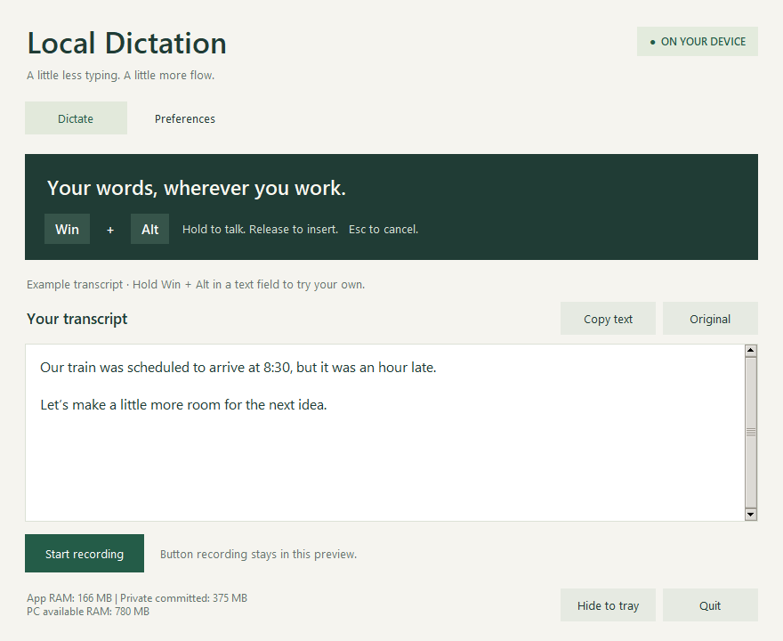

Find your place.
Click a text field in your email, notes, or document. That’s where your words will go.
YOUR VOICE, RIGHT AT HOME
A little less typing. A little more flow.
Turn your voice into text, right where you work.
All on your own Windows PC.
Free · Windows 10/11, 64-bit · Installer EXE
App, runtime, and models included. Install and dictate offline.
Make room for the
ideas that arrive
before the words.
LESS FRICTION, MORE EXPRESSION
Keep your attention on the thought.
Local Dictation takes care of getting it down.
Click a text field in your email, notes, or document. That’s where your words will go.
Hold Win + Alt and say what’s on your mind. Your microphone listens while you hold.
Let go to transcribe and insert. Review your words, or copy from the app if a field blocks insertion.
A SMALL MOMENT OF MAGIC
Local recognition, punctuation, and simple time formatting help turn a thought into a useful sentence.
Scripted demonstration. This page does not use your microphone.
Actual recognition varies with your voice and recording conditions.
“our train was scheduled to arrive at half past eight but it was an hour late”
Our train was scheduled to arrive at 8:30, but it was an hour late.
A QUIETER KIND OF APP
A clear place to dictate, check your transcript, and make it your own. Then tuck it into the tray and get back to your day.

PERSONAL REALLY MEANS PERSONAL
Speech is processed on your computer. Audio stays in memory, and your last transcript stays in the app while it’s open. No cloud transcription. No passive conversation history.
GOOD TO KNOW
Yes. There is no subscription, account, or paid API. The app runs open-source speech recognition on your PC. The installer includes its runtime, dependencies, and speech models.
A Windows installer named LocalDictation-Setup.exe. Open it, review the license, choose a destination on C:, G:, or another writable drive, select components and shortcuts, and install. Python and local models are included. The final screen can launch the app.
This release targets 64-bit Windows 10 and 11. We recommend starting with 8 GB RAM and at least 2 GB of free storage. It was tested on an Intel i5 laptop with 8 GB RAM; performance on other PCs varies. A microphone is required. Once you have the installer, setup needs no internet connection.
Yes. The downloaded installer contains everything required for setup and dictation. Recognition, punctuation, time formatting, and saved corrections all run locally. The lightweight English model and punctuation are included.
This beta installer is not code-signed, so Windows may display an unknown-publisher or reputation warning. The download checksum is provided below. It checks file integrity; it is not a substitute for publisher signing.
Not yet. This version focuses on English speech recognition, punctuation, spacing, and supported time phrases. It can still mishear words or place punctuation incorrectly, so review important text. Full grammar rewriting is not included.
It works in ordinary Windows text fields that accept simulated typing. Some protected or administrator-level applications may block insertion. You can always copy the transcript from the app. Keep the target window active while it transcribes.
The app and models stay in the installation folder you choose. Settings and saved corrections are kept separately in %LOCALAPPDATA%\LocalDictation. Uninstalling removes the app and models but preserves those preferences. Windows may use temporary space during installation.
MAKE SPACE FOR YOUR NEXT THOUGHT
Meet your new hold-to-talk habit.
Download for Windows